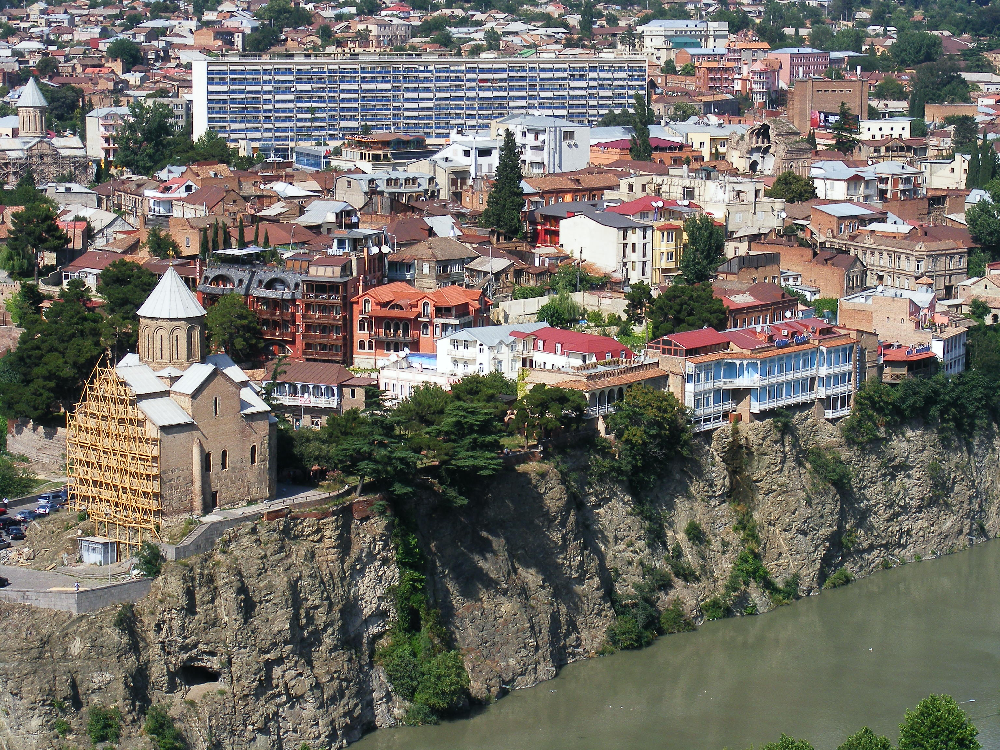

ავლაბარი, ვაკე, საბ
ავლაბარი — თბილისის ერთ-ერთი უძველესი უბანი. მდებარეობს მდ. მტკვრის მარცხენა მხარეს — რიყეს, ჩუღურეთს, ელიასა და ნავთლუღს შორის. ამჟამად ისნის რაიონში. ავლაბარს XI-XIII საუკუნეების ისტორიულ წყაროებში „ისანი“ ეწოდება. სიტყვა „ავლაბარი“ XIV საუკუნეში ჩანს დამკვიდრებული, თუმცა „ავლაბრის“ პარალელურად „ისანი“ შემდეგაც იხმარებოდა. ავლაბრის მთავარი უბნები იყო სოღდებილი და მეტეხი.
არქეოლოგიური მასალის მიხედვით ავლაბრის ტერიტორია ძვ. წ. ათასწლეულიდან ყოფილა დასახლებული. XVIII საუკუნეში ავლაბარს ორი გალავანი ჰქონდა: ერთი — ავლაბრის გალავანი, რომელიც მთელ ავლაბარს ერტყა გარს, და მეორე — თბილისის ანუ ქალაქის გალავანი — ისან-ავლაბრის მარჯვენა მხარეს მდებარე კალა-თბილისის ციხე-გალავნის გაგრძელება იყო და ფეოდალური ხანის ქალაქის რთულ თავდაცვით სისტემაში შედიოდა. კალა-თბილისსა და ავლაბარს შუა მტკვარზე უძველესი დროიდან გადებული იყო მეტეხის ანუ ავლაბრის ხიდი. ე. წ. ავლაბრის კარიდან იწყებოდა კახეთის გზა. ავლაბარში მრავალი სავაჭრო-სახელოსნო, ქართული და გვიანდელი სომხური ეკლესია იყო. მატერიალური კულტურის ძეგლთაგან ავლაბარში შემორჩენილია მეტეხის ღვთისმშობლის ტაძარი, დარეჯან დედოფლის სასახლე — „საჩინო“, ფორაქიშვილების დარბაზი, რამდენიმე ეკლესია და სხვა. XX საუკუნის დასაწყისში ავლაბარი თბილისის მუშათა რევოლუციური მოძრაობის ერთ-ერთი კერა იყო. აქ მდებარეობდა ავლაბრის არალეგალური სტამბა.
არქეოლოგიური მასალის მიხედვით ავლაბრის ტერიტორია ძვ. წ. ათასწლეულიდან ყოფილა დასახლებული. XVIII საუკუნეში ავლაბარს ორი გალავანი ჰქონდა: ერთი — ავლაბრის გალავანი, რომელიც მთელ ავლაბარს ერტყა გარს, და მეორე — თბილისის ანუ ქალაქის გალავანი — ისან-ავლაბრის მარჯვენა მხარეს მდებარე კალა-თბილისის ციხე-გალავნის გაგრძელება იყო და ფეოდალური ხანის ქალაქის რთულ თავდაცვით სისტემაში შედიოდა. კალა-თბილისსა და ავლაბარს შუა მტკვარზე უძველესი დროიდან გადებული იყო მეტეხის ანუ ავლაბრის ხიდი. ე. წ. ავლაბრის კარიდან იწყებოდა კახეთის გზა.